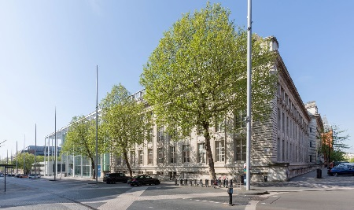

1st Line Support Analyst - Imperial College London
- Deployed as a member of the Rapid Response Team (RRT) to provide immediate, first-line support for audio-visual (AV) systems and hardware machines.
- Respond to urgent requests for technical assistance via combination of ITSM (ServiceNow) and high-priority line within the service level agreement (SLA) time frame.
- Conversant with the use and support of audio-visual systems, cluster desktop machines, Windows operating systems, and related core services.
- Utilised PowerShell in a limited capacity to automate SCCM rebuild/builds for AV & Cluster machines via network boot (PXE).
- Conduct network port patching requests with a focus on identifying and patching relevant ports, while also unpatching any ports that have remained unused for a specified period, if necessary as per the request.
|
Date: Jan 2022 - Present

|